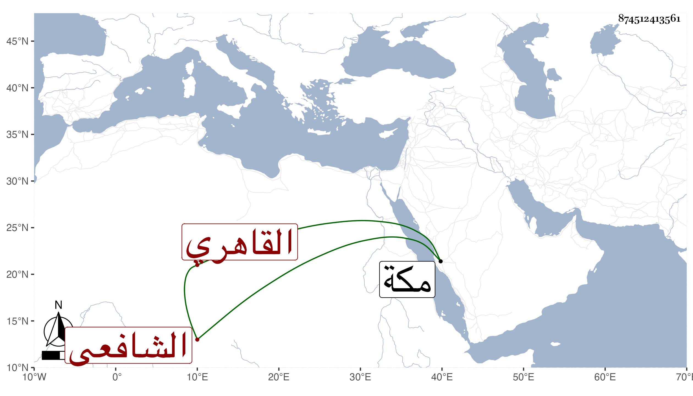

0902Sakhawi.DawLamic.ITO20230111-ara1.EIS1600.874512413561
Biography ID: 874512413561
237
عبد الرحمن بن عبد الرحمن بن علي بن صلاح الدين بن الزين القاهري الشافعي الآتي أبوه ويعرف بابن الخطيب لكون أبيه كان خطيبا بجامع البرددار بخط قنطرة قديدار . ولد بعد موت أبيه بيسير في ربيع الأول سنة ثلاث وستين وثمانمائة بالخط المذكور ونشأ فحفظ القرآن عند زوج أمه الشمس المقري وهو الذي رباه وجوده على الزين عبد الغني الهيثمي والمنهاج وعرضه على الأمين الأقصرائي ، البكري والبامي وقطعة من ألفية النحو وأخذ الفقه عن الجوجري في عدة تقاسيم والبكري وقرأه والعربية والمنطق علي الشرف موسى البرمكيني وحضر في الأصول والعقائد عند الكمال بن أبي شريف وفي بعض العقليات عند التقي الحصني وأخذ الفرائض والحساب والميقات عن البدر المارداني ولازمه في قراءة كتب كثيرة وتميز وخطب ولازمني في ابن الصلاح وغيره واغتبط بذلك وتألم لسفري في سنة ست وتسعين وكذا أخذ عن الديمي وكان يتكسب بسوق الدراع من سوق الحاجب نصف سنة ثم ترك لما لا يعجبه وقرأ على العامة وقد لازمني في بحث ابن الصلاح وغيره كشرحي على تقريب النووي وأخذ عني غير ذلك وربما يتردد لابن الأسيوطي ، وحج في موسم سنة ثمان وتسعين ولقيني بمكة ثم مني وسألني عن شيء يتعلق بالمنسك ونعم الرجل سكونا وعقلا وفضلا ورغبة في الخير وتحصيل الكتب كتابة وشراء .
